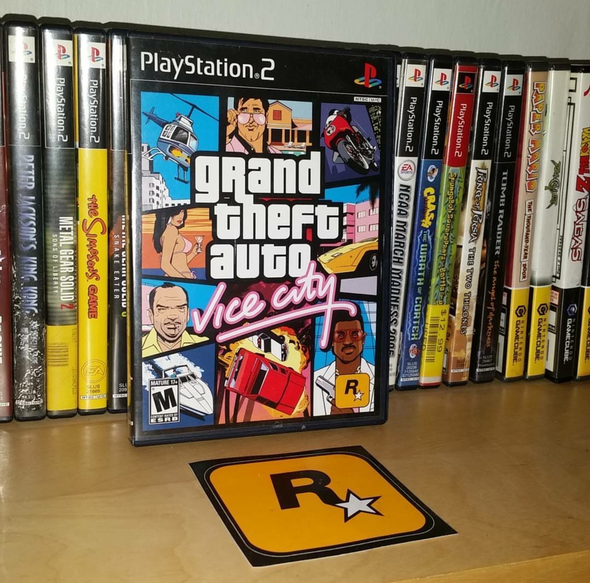

Why I love Rockstar games
I always played these kid friendly games and sometimes I wanted something a little more intense. That's where Rockstar Games came into my life. I played violent video games at such a young age and Grand Theft Auto was my favorite series. When I couldn't get a specific Rockstar title that I wanted, my mom decided to get me Bully. Bully was a decent game, it's like a friendly version of Grand Theft Auto. I'm still playing Grand Theft Auto 5 and I am still waiting for the next Grand Theft Auto game. What is coming next is Red Dead Redemption 2. The first game was great.
Grand Theft Auto Vice City Review

This was the first console game I have ever played on the PS2. I was like 5 at the time when this game was huge. Obviously my parents and my older brother forbid me to play this but I wasn't gonna listen. The year is 1986, and Tommy Vercetti has just been released from prison after doing a 15-year stretch for the mob. The mob--more specifically, the Forelli family--appreciates Tommy's refusal to squeal in exchange for a lesser sentence, so they send him down to Vice City to establish some new operations. Tommy's first order of business in Vice City is to score a large amount of cocaine to work with. But Tommy's first drug deal goes sour, leaving him with no money, no cocaine, and no idea who wronged him. The mob is, of course, angry over the whole situation, and now Tommy has to make up for the loss before the gangsters come down from Liberty City to clean up the mess. As Tommy, you'll start the investigation, figure out who ripped you off, take care of business, and set up shop in Vice City in a big, big way. Oh, and you'll also drive taxis, get involved in a turf war between the Cubans and the Haitians, befriend a Scottish rock group named Love Fist, become a pizza delivery boy, smash up the local mall, demolish a building to lower real estate prices, hook up with a biker gang, run an adult film studio, take down a bank, and much, much more.
Bully
Though developed by Rockstar, makers of the Congressional-favorite Grand Theft Auto series, Bully is a T-rated game. There's no blood, no guns, no boosting of cars. Assault an officer of the law and you don't get a 6-star wanted rating -- you get busted. That doesn't mean there isn't plenty of mayhem (and violence) in Bully, just that it's not a GTA clone. Imagine if John Hughes made an open-world videogame starring John Bender, the thug from The Breakfast Club, and you should have a pretty good idea of the tone for Bully. This is an angst-filled game; a light-hearted simulation of the horrors of high school. And it's a lot of fun. You play as Jimmy Hopkins, a 15-year-old delinquent who's been expelled from seven other schools. After his mother and latest step-father dump him in a corrupt boarding school just outside the town of Bullworth, Jimmy must find a way to go from social pariah to schoolyard hero. Bully takes us through Jimmy's first year at Bullworth Academy. It's a rough year as Jimmy must negotiate the social strata of the various cliques in school (bullies, nerds, jocks, preppies, greasers) and out of school (townies). There are classes to ditch, prefects and cops to avoid and an entire town to explore.
Grand Theft Auto 5
Those perspectives come courtesy of Michael, Franklin, and Trevor. Michael’s a former criminal who’s dissatisfied with his current life of privilege and relaxation. His marriage is on the rocks and he struggles to connect with his shallow daughter Tracey, who dreams of making it big in reality TV, and with his lazy, entitled son Jimmy, who spends most of his time spouting hate-filled trash talk while playing video games online. Franklin’s a talented young driver and repo man who doesn’t seem to have too many opportunities to move up in the world, until he has a chance meeting with Michael. Michael finds Franklin easier to connect with than his own children, and he promptly takes him under his wing and ushers him into a life of big-time crime.
Moments of hypocrisy and inconsistency diminish the otherwise strong characters.
And then there’s Trevor, a former friend and business associate of Michael’s who is now a methamphetamine entrepreneur living in a desert town north of Los Santos. Trevor’s a truly horrible, terrifying, psychotic human being--and a terrific character. He possesses a chilling combination of intelligence and insanity, and he’s so monstrously violent and frightening at times that he almost makes the other two protagonists seem well-adjusted by comparison. Exceptional voice acting and animation help make Trevor a character you will never, ever forget, even though you might want to.